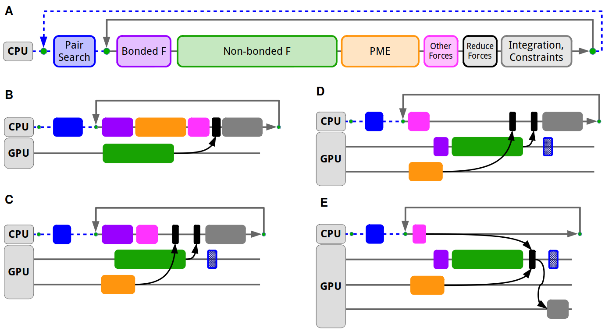

Heterogeneous parallelization and GPU acceleration¶

From laptops to the largest supercomputers, modern computer hardware increasingly relies on graphics processing units (GPU) along CPUs for computation. GPUs have revolutionized the field of MD and made high simulation performance both accessible as well as cost-effective. GROMACS has supported GPU acceleration since version 4.5 (2010), and natively since version 4.6 (2013). Reformulated fundamental MD algorithms for modern architectures (like pair interaction calculation), combined with a heterogeneous parallelization scheme which uses both multicore CPUs and GPUs accelerators in parallel are the two key ingredients of the GROMACS native GPU support. This not only allows harnessing each compute unit for the tasks they are best at enabling greater simulation performance, but also provides a solid foundation for extensibility and for maintaining broad feature support.
The GROMACS simulation engine is designed with the goal to allow flexible assigning tasks either to CPU or GPU. Typically the most computationally intensive tasks, like the short-range nonbonded and long-range PME electrostatics are offloaded to the GPU, while the CPU can compute other tasks like bonded interactions in parallel, as well as doing complex tasks like domain decomposition and neighbor search. This scheme ensures that regardless of the features used, nearly all GROMACS simulations can make use of GPU acceleration, without having the entire feature set of the MD engine ported to GPUs. Features not ported to GPUs can run on the CPU in parallel with GPU execution and since GROMACS has highly optimized CPU code, most features can be seamlessly supported without significant performance loss.
The initial version of the GROMACS heterogeneous engine were programmed using CUDA, at the time the dominant programming API for the most widely used NVIDIA GPUs. However, portability has been a central goal for the project and follow-up efforts focused on adding a portable multi-vendor backend. This portable backend used OpenCL, a standards-based portable GPU API, which after a few generations gained broad support for all major vendors’ GPUs, including, since 2023, Apple Silicon GPUs. In 2021, the GROMACS project shifted focus to SYCL, a modern C++-based API, as a portable GPU backend. SYCL became the preferred backend to support AMD and Intel GPUs since 2022. In GROMACS 2023, SYCL has near-full feature parity with the CUDA backend and can be used with all recent AMD and Intel GPUs. While the SYCL backend does support NVIDIA GPUs, CUDA remains the recommended choice on that platform.
The GROMACS heterogeneous engine was first designed around a force-offload mode which relies on offloading the computation of various types of forces to the GPU, and transferring back the computed forces for integration on the CPU. This force-offload mode served well on the initial few generations of GPU compute platforms. However, the majority of computational performance was increasingly provided by GPUs, and the cost of moving data between CPU and GPU was becoming a performance limiter. For that reason, GROMACS 2020 introduced a GPU-resident parallelization mode which, by moving integration and constraints to the GPU, can avoid the frequent CPU–GPU data movement and synchronization and with that prioritizes keeping the GPU busy. Unlike the force-offload mode, the GPU-resident mode can keep the simulation state on the GPU and avoid CPU–GPU transfers for up to tens or hundreds of MD steps. This allows maintaining a high GPU utilization while still retaining the core heterogeneous capability to do computation in parallel on the CPU supporting features like AWH and free energy calculations. GPU-resident mode was supported by the CUDA backend since 2020 and by the SYCL backend since 2022; since 2023, GROMACS uses GPU-resident mode by default when possible.
Modern high-performance GPU servers come with specialized interconnects which allow faster data movement between GPUs within a compute node as well as across multiple servers. To make use of these faster interconnects for improved scalability and absolute performance of multi-GPU simulations, direct GPU communication was designed and developed. First made available in the 2020 release with the CUDA backend, it offers major performance benefits over the traditional CPU-staged communication. This was later extended to support generic GPU-aware MPI and SYCL in the 2023 release, allowing to scale simulations across multiple AMD or Intel GPUs. GROMACS 2023 also brings significant improvements in multi-GPU strong scaling thanks to algorithmic and implementation work that lifted the limitation of a simulation being able to use only a single GPU for PME work. The GPU PME decomposition allows also distributing the PME computation across multiple GPUs including fast Fourier transforms thanks to the integration with distributed FFT libraries.
- References
Szilárd Páll and Berk Hess, “A Flexible Algorithm for Calculating Pair Interactions on SIMD Architectures”, Computer Physics Communications 184, no. 12 (December 2013): 2641–50. doi:10.1016/j.cpc.2013.06.003.
Szilárd Páll, Artem Zhmurov, Paul Bauer, Mark Abraham, Magnus Lundborg, Alan Gray, Berk Hess, and Erik Lindahl, “Heterogeneous parallelization and acceleration of molecular dynamics simulations in GROMACS”, J. Chem. Phys. 153, 134110 (2020) doi:10.1063/5.0018516
Andrey Alekseenko, Szilárd Páll and Erik Lindahl, “GROMACS on AMD GPU-Based HPC Platforms: Using SYCL for Performance and Portability”, CUG ‘24: Proceedings of the Cray User Group (August 2025): 71-84. doi:10.1145/3725789.3725797
Mashesh Doijade, Andrey Alekseenko, Ania Brown, Alan Gray and Szilárd Páll, “Redesigning GROMACS Halo Exchange: Improving Strong Scaling with GPU-initiated NVSHMEM”, Proceedings of 2025 Workshops of the International Conference on High Performance Computing, Network, Storage, and Analysis (2025), 1314-29 doi:10.1145/3731599.3767508
Webinars Peeking into the black box of GROMACS performance (March 2026) Improvements in the GROMACS heterogeneous parallelization (April 2021)